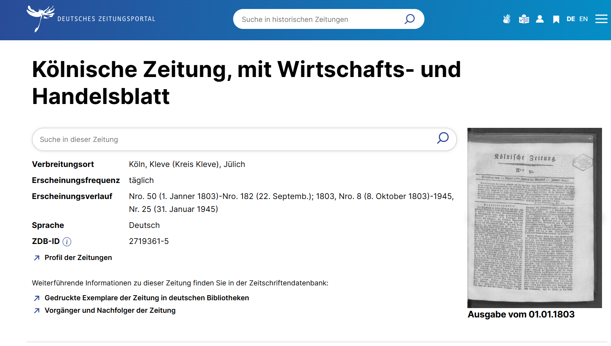
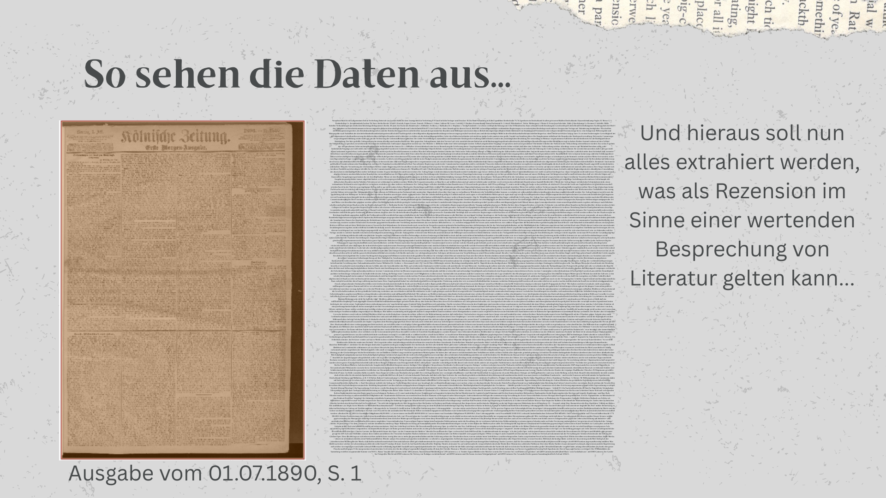

Korpus & Daten
Datenbasis im Überblick
Die Datenbasis der Arbeit bilden Literaturbesprechungen in der Kölnischen Zeitung für den Zeitraum von 1814 bis 1900. Aus dem Gesamtbestand von 224.927 digitalisierten Seiten wurden mithilfe einer Keyword-Vorauswahl und anschließender Zufallsstichprobe insgesamt 1.740 Seiten gezogen – je 20 pro Jahr –, die eine manuelle Überprüfung und Evaluation der LLM-gestützten Methodik ermöglichen. Daraus wurden 633 Rezensionen manuell verifiziert und als Grundlage der explorativen Analyse genutzt.
| Kennzahl | Wert |
|---|---|
| Untersuchungszeitraum | 1814–1900 (87 Jahre) |
| Gesamtbestand (Kölnische Zeitung) | 224.927 Seiten |
| Stichprobe (Sample) | 1.740 Seiten (20 pro Jahr) |
| Verifizierte Rezensionen | 633 |
| Datenquelle | Deutsche Digitale Bibliothek (API) |

Auswahl der Zeitung
Die Kölnische Zeitung war im deutschsprachigen Raum eine der bedeutendsten Tageszeitungen des 19. Jahrhunderts. Als national-liberales Leitmedium mit überregionaler Reichweite erreichte sie Auflagen von 2.086 (1822) über 40.000 (1871) bis geschätzt 200.000–300.000 Exemplaren (1914). Drei Faktoren machen sie zum geeigneten Fallbeispiel für diese Arbeit:
Erstens ihre publizistische Relevanz: Die Zeitung spiegelte die literarischen Interessen einer breiten, gesellschaftlich heterogenen Leserschaft wider.
Zweitens ihre Vorreiterrolle im Feuilleton: Bereits 1838 wurde das Feuilleton als feste literarische Rubrik „unter dem Strich" ins Hauptblatt integriert – früher als bei vielen anderen Zeitungen. Dies lässt erwarten, dass Literaturbesprechungen hier mit einer gewissen Regelmäßigkeit und Systematik auftauchen.
Drittens ihre digitale Verfügbarkeit: Die Jahrgänge 1803–1945 sind über das Zeitungsportal der Deutschen Digitalen Bibliothek mit OCR-Texten und per API zugänglich, was eine computergestützte Weiterverarbeitung ermöglicht.
Auswahl des Zeitraums (1814–1900)
Das 19. Jahrhundert ist aus mehreren Gründen als Untersuchungszeitraum besonders geeignet. Es ist eine Epoche tiefgreifenden Wandels für Literatur und Literaturkritik: Steigende Alphabetisierung, ein expandierender Buchmarkt und die Verlagerung der Kritik von gelehrten Journalen in das Feuilleton der Tagespresse prägen diesen Zeitraum. Die Frage, wann und wie Rezensionen in der Kölnischen Zeitung entstehen und sich verändern, erscheint daher hier besonders interessant.
Der Beginn im Jahr 1814 – und nicht bereits 1803 – erklärt sich dadurch, dass die Digitalisate erst ab diesem Jahrgang durchgehend vollständig vorliegen. Auf eine Erweiterung in das 20. Jahrhundert wurde verzichtet, da die Zeitungslandschaft dort deutlich unübersichtlicher wird und die Datenmenge im Hinblick auf eine umfassende methodische Evaluation bewusst zu begrenzen.
Datenqualität und OCR
Die über die DDB-API extrahierten OCR-Texte sind seitenweise strukturiert und enthalten pro Seite ca. bis zu 5.000 Wörter im unstrukturierten Fließtext. Die Qualität variiert erheblich: Manche Seiten sind nahezu fehlerfrei lesbar, während andere durch historische Schreibweisen, Frakturschrift, komplexe Layouts und Druckfehler stark verrauscht sind. In seltenen Fällen sind Texte durch fehlerhafte Layout-Erkennung bis zur Unleserlichkeit entstellt.
Da die Seiten nicht nach einzelnen Artikeln unterteilt sind, müssen Texte, die sich über mehrere Seiten erstrecken, als unvollständig betrachtet werden – eine Einschränkung, die bewusst in Kauf genommen wurde. Maßnahmen zur OCR-Korrektur oder Textvervollständigung wurden im Rahmen dieser Arbeit nicht vorgenommen, um zu erproben, wie gut LLMs auch unter diesen realen, unbereinigten Bedingungen eingesetzt werden können.
„what can be searched is not necessarily what was printed" Ehrmann, M., Bunout, E., & Clavert, F. (2023). Digitised Historical Newspapers: A Changing Research Landscape. In E. Bunout, M. Ehrmann, & F. Clavert (Hrsg.), Digitised Newspapers—A New Eldorado for Historians? Reflections on Tools, Methods and Epistemology (Bd. 3, S. 1–24). De Gruyter. https://doi.org/10.1515/9783110729214
Dieser Hinweis auf die epistemologischen Grenzen digitaler Zeitungsarchive gilt als methodische Prämisse der gesamten Arbeit: Die verwendeten Daten sind nicht neutral, sondern durch Fehler, Auslassungen und strukturelle Verzerrungen geprägt.

Zusammensetzung des Samples
Um eine diachrone Untersuchung zu ermöglichen, wurden die 1.740 Seiten bewusst gleichmäßig über alle Jahrgänge verteilt – je 20 Seiten pro Jahr. Diese Entscheidung weicht von der tatsächlichen Keyword-Verteilung ab, nach der in den frühen Jahrgängen deutlich weniger potenziell relevante Seiten vorhanden sind als in den späteren. Die Gleichverteilung ermöglicht jedoch, auch frühe Entwicklungen in den Blick zu nehmen und diachrone Tendenzen analytisch abzubilden, ohne einzelne Jahrzehnte von vornherein zu bevorzugen.
Die Auswahl der Seiten innerhalb eines Jahrgangs erfolgte zufällig, jedoch auf Basis einer Keyword-Vorfilterung: Nur Seiten, die mindestens zwei literaturbezogene Schlüsselwörter (z. B. Dichter, Literatur, Leser, Übersetzung) enthalten, wurden in die Stichprobe aufgenommen, um den Verarbeitungsaufwand durch eine Begrenzung der Datenmenge zu reduzieren.